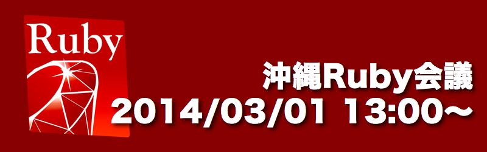
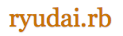
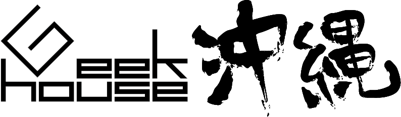

<!doctype html>
<html>
  <head>
    <meta charset="utf-8">
    
    <!-- Always force latest IE rendering engine or request Chrome Frame -->
    <meta content="IE=edge,chrome=1" http-equiv="X-UA-Compatible">
    
    <!-- Use title if it's in the page YAML frontmatter -->
    <title>沖縄Ruby会議01</title>
    
    <link href="stylesheets/normalize.css" media="screen" rel="stylesheet" type="text/css" />
<link href="stylesheets/all.css" media="screen" rel="stylesheet" type="text/css" />
    <script src="javascripts/all.js" type="text/javascript"></script>
    <style>
body {
  padding-top: 50px;
}
.starter-template {
  padding: 40px 15px;
  text-align: center;
}
    </style>
  </head>
</html>


  <body>

    <div class="navbar navbar-inverse navbar-fixed-top" role="navigation">
      <div class="container">
        <div class="navbar-header">
          <button type="button" class="navbar-toggle" data-toggle="collapse" data-target=".navbar-collapse">
            <span class="sr-only">Toggle navigation</span>
            <span class="icon-bar"></span>
            <span class="icon-bar"></span>
            <span class="icon-bar"></span>
          </button>
          <a class="navbar-brand" href="#">沖縄Ruby会議01</a>
        </div>
        <div class="collapse navbar-collapse">
          <ul class="nav navbar-nav">
            <li class="active"><a href="#">ホーム</a></li>
            <li><a href="#about">概要</a></li>
            <li><a href="#contact">連絡先</a></li>
          </ul>
        </div>
      </div>
    </div>

    <div class="container">
      <div class="welcome">
  <!--
  <p class="doc">
    <i class='icon-eye-close'></i>
    <i class='glyphicon-eye-close'></i>
  </p><!-- .doc -->
  </img>
  <div id="about"></div>
  <br />
  <br />
  <h2>概要</h2>
  <ul style='list-style-type:none;'>
    <li>名称: 沖縄Ruby会議01</li>
    <li>日時: 2014年3月1日 13:00-17:00</li>
    <li>場所: 琉球大学 大教室 322 (講演用) & 321 (作業用)</li>
  </ul>

  <h2>目的</h2>
  <ul style='list-style-type:none;'>
    <li>1. 沖縄のRubyコミュニティ間 (Ryukyu.rb, Ryudai.rb, Okinawa.rb) の親睦を深める。</li>
    <li>2. 沖縄の人達にRubyを知ってもらう。</li>
    <li>3. 県内と県外のRubyistが交流する場を設ける。</li>
  </ul>

  <h2>プログラム (調整中)</h2>
  <ul style='list-style-type:none;'>
    <li>開会</li>
    <li>県外ゲスト講演１: 「タイトル未定」<a href="http://twitter.com/yukihiro_matz">@yukihiro_matz</a></li>
    <li>県外ゲスト講演２: 「タイトル未定」<a href="http://twitter.com/masuidrive">@masuidrive</a></li>
    <li>県内ゲスト講演１: 「Ruby x Digital Fabrication (仮)」<a href="@mgwsuzuki">@mgwsuzuki</a></li>
    <li>県内ゲスト講演２: 調整中...</li>
    <li>県内コミュニティ活動の紹介</li>
    <li>Lightning Talks</li>
    <li>閉会</li>
    <li>懇親会</li>
  </ul>

  <h2>LTスピーカー募集！</h2>
  <ul style='list-style-type:none;'>
    <li>沖縄Ruby会議でLightning Talksをしてくれる方を募集しています！</li>
    <li>詳細は後日、本サイトよりお知らせ致します。12月末日〆切予定。</li>
  </ul>

  <h2>ハッシュタグ</h2>
  <ul style='list-style-type:none;'>
    <li><h3><a href="https://twitter.com/search?q=okrk01&src=typd&f=realtime">#okrk01</a></h3></li>
  </ul>

  <h2 id="contact">連絡先</h2>
  <ul style='list-style-type:none;'>
    <li></img></li>
  </ul>
  <h2>主催</h2>
  <ul style='list-style-type:none;'>
    <li><a href="http://qwik.jp/okinawarb/"></img></a></li>
    <li><a href="https://www.facebook.com/groups/ruby.okinawa/"></img></a></li>
    <li><a href="http://lingr.com/room/ryudairb"></img></a>  </li>
  </ul>

  <h2>協力</h2>
  <ul style='list-style-type:none;'>
    <li><a href="http://ruby-no-kai.org/"></img></a></li>
    <li><a href="http://text.geeoki.com/"></img></a></li>
  </ul>
  <p><a href="http://middlemanapp.com/">Powered by Middleman</a></p>
</div><!-- .welcome -->

    </div>
  </body>
</html>
